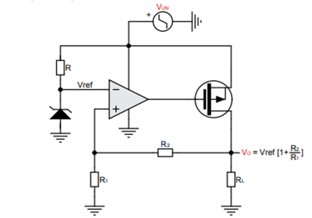
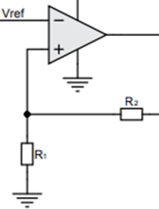
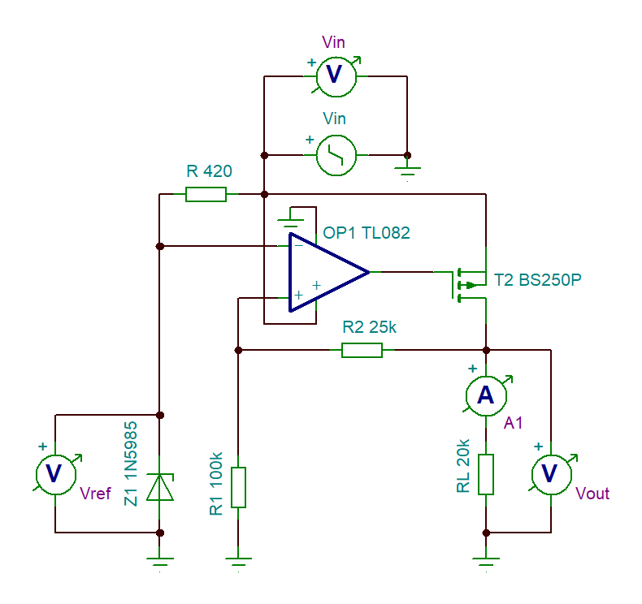
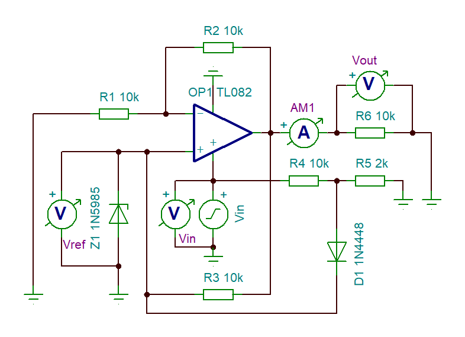
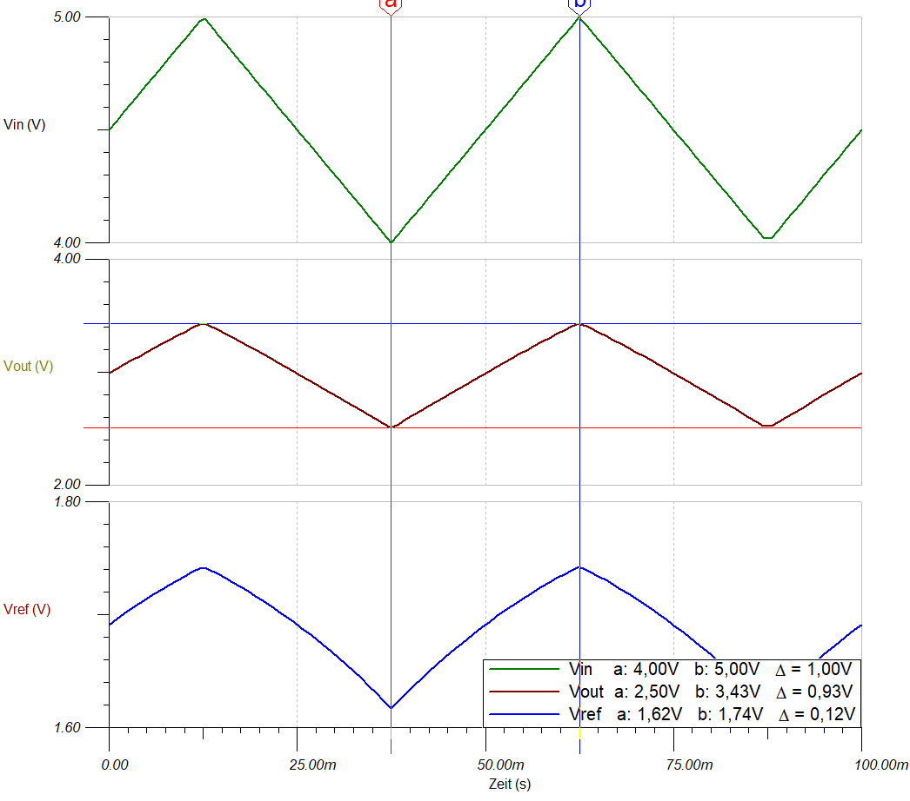
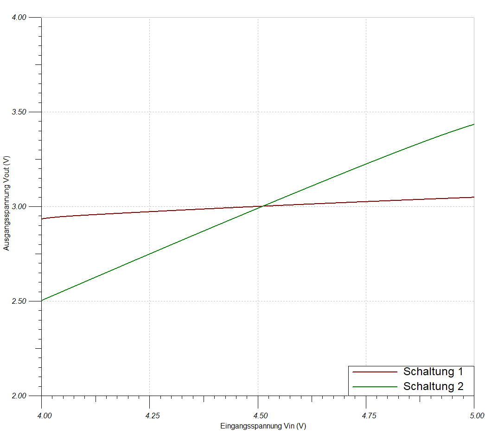

Entwurf eines LDO Reglers¶
Kurze Theorie und Motivation¶
Um eine feste, vorgegebene Spannung in eine beliebige Wunschspannung umzuwandeln, werden Spannungsregler verwendet. Für niedrige Spannungen kann ein “Low Dropout Regler” (LDO) verwendet werden. Dieser zeichnet sich für seine hohe Effizienz und seine rauscharme Umwandlung aus. Außerdem kann durch Anpassung der Ausgangsspannung des LDOs die Effizienz der angeschlossenen Komponente gesteigert und damit einher die Abwärme reduziert werden.
Gegenüber den DC/DC PWM gesteuerten Spannungswandlern hat der LDO keine Welligkeit in der Ausgangsspannung. Außerdem werden nur wenige zusätzliche Bauteile benötigt, was zusätzlich das Designen von Platinen erleichtert.
Dropout¶
Der Dropout entspricht der Differenzspannung zwischen dem Ein- und Ausgang und fällt so über dem LDO ab. Eine Dropoutspannung fällt immer an, sodass erst ab einer ausreichenden Eingangsspannung die gewünschte Ausgangsspannung ausgegeben werden kann. Mit steigender Eingangsspannung steigt die Dropoutspannung ebenfalls.
Aufschluesselung der Funktionsgruppen¶
Anhand des ersten Versuchs soll ein Spannungsregler mit Hilfe eines
Operationsverstärkers, einem PMOS-FET und weiteren Bauteilen realisiert
werden. Das Ziel ist es eine Ausgangsspannung \(V_{0}\) von \(3V\) zu
erhalten, während die Eingangsspannung \(V_{UN}\) zwischen \(4V\) und \(5V\)
variiert. Zur Verfügung steht eine Schaltung mit unbekannten Variablen.
Diese gelten nun zu bestimmen. Die Schaltung sieht wie folgt aus
10_fig_01{.interpreted-text role=”numref”}:
{##10_fig_01 .align-center .LDO-Regulator .[1]}
Da auf dem ASLKpro-Board bestimmte Bauteile vorgegeben sind, setzen wir bei dem Operationsverstärker auf den TL082 und bei dem P-MOS auf den BS250P. Um die restlichen benötigte Bauteile zu bestimmen ist es hierzu von Nöten die Aufgabe der einzelnen Bauteile zu kennen!
Referenzspannung¶
Die Referenzspannung \(V_{ref}\) wird durch die Zenerdiode und dem Vorwiderstand \(R\) bestimmt. Eine Zener-Diode wird verwendet um den Zener-Effekt zu nutzen. Solange die Eingangsspannung größer als die Durchbruchspannung der Zener-Diode ist, liegt die Durchbruchspannung an der Zener-Diode an. Dies bedeutet, dass dort dauerhaft eine gleichbleibende Spannung vorhanden ist, obwohl die Eingangsspannung variieren kann. Die Spannungsdifferenz zwischen Eingangsspannung und Durchbruchspannung fällt über den Vorwiderstand \(R\) ab.
 {##10_fig_02 .align-center
.Referenzspannung .[1]}
{##10_fig_02 .align-center
.Referenzspannung .[1]}
Um die Zenerdiode zu bestimmen, muss die Referenzspannung ausgerechnet werden. Diese erhalten wir über die folgende Formel:
Herauszulesen ist, dass \(V_{0}\) über die Referenzspannung und dem Verhältnis der Widerstände \(R_{2}\) zu \(R_{1}\) eingestellt werden kann. Durch das auflösen der Klammer wird nochmal verdeutlicht, dass \(V_{ref}\) kleiner sein muss als \(V_{0}\):
Da in unserem Fall eine Ausgangsspannung von \(V_{0} = 3V\) gefordert ist ergibt sich hierfür folgendes Ergebnis:
Wie zuvor erwähnt, entspricht die Referenzspannung der Durchbruchspannung der Zenerdiode. Daher ist nun eine Zenerdiode zu wählen, deren Durchbruchspannung \(U_{Z} < 3V\) entspricht. Hierfür kann z.B. eine Zenerdiode mit \(U_{Z} = 2,4V\) oder \(U_{Z} = 2,7V\) verwendet werden. In unserem Fall haben wir uns für eine Z-Diode mit \(U_{Z} = 2,4V\) entschieden. Daher entspricht \(V_{ref} = 2,4V\)
Nun wird der Vorwiderstand R bestimmt. Dieser dient dazu den Durchbruchstrom einzuhalten, der im Datenblatt der Z-Diode zu finden ist. In unserem Fall beträgt dieser \(5mA\). Mit dem Ohmschen Gesetz kann nun der Widerstand \(R\) bestimmt werden:
\(I_{-op}\) entspricht dem Strom, der in den Operationsverstärker abgeführt wird. Da hier jedoch der Idealfall betrachtet wird, ist der Eingangswiderstand unendlich groß und somit wäre \(I_{-op} = 0A\). Daher ergibt sich folgender Vorwiderstand:
Spannungsteiler/Rückführgröße¶
Da bereits Vref gewählt wurde, kann nun das Verhältnis der Widerstände \(R_{2}\) zu \(R_{1}\) bestimmt werden.
{##10_fig_03 .align-center .Spannungsteiler ./ .Rückführgröße .[1]}
Durch einsetzen von \(V_{ref} = 2,4V\) und \(Vo = 3V\) ergibt sich folgendes Verhältnis:
Somit muss \(R_{1}\) viermal so groß wie \(R_{2}\) gewählt werden. Außerdem ist zu beachten, dass um so größer die Widerstände gewählt werden, Toleranzen immer weniger eine Rolle spielen und so die Ausgangsspannung \(V_{0}\) stabiler wird. Daher haben wir uns für \(R_{1} = 100k\Omega\) und \(R_{2} = 25k\Omega\) entschieden.
PMOS¶
Wie schon erwähnt, können mit einem LDO Spannungen auf eine stabile Spannung hochtransformiert werden. Beispielsweise von \(3,3V\) auf \(4V\). Der PMOS ist so verbaut, dass die entstehende Spannung vom Source-Anschluss zum Gate-Anschluss die \(U_{DS}\) Spannung bildet. Diese wiederum beeinflusst unsere Zielspannung \(V_{0}\). \(V_{0}\) ist die Differenz aus der Eingangsspannung \(V_{UN}\) und der Spannung \(U_{SG}\), die am PMOS anliegt und auch Dropout-Spannung genannt wird. Die Spannung \(U_{SG}\) reguliert den Stromfluss zwischen dem Source-Anschluss und dem Drain-Anschluss. Somit steuert allgemein gesagt die Spannung \(U_{SG}\) die Spannung \(U_{SD}\). Da bei Beeinflussung des Stromes sich auch die Spannung entsprechend ändert.
Regelstrecke¶
Die Referenzspannung entspricht der Spannung von von \(R_{1}\) die durch den Spannungsteiler entsteht. Diese beiden Spannungen werden im OP miteinander verglichen. \(V_{ref}\) zu \(V_{out}\) ist das gleich wie \(R_{1}\) zu (\(R_{1}+R_{2}\)). Vref muss kleiner als \(V_{0}\) sein, daher wurde als Diodenspannung \(2,4V\) gewählt. An \(R_{1}\) liegt die Diodenspannung an und an \(R_{2}\) die Differenz von Diode und \(V_{0}\), also ungefähr \(0,6V\). Die Spannung an dem Widerstand \(R_{1}\) ist die Rückführgröße und diese wird permanent mit der Referenzspannung verglichen. Da es sich ständig ändert (auch wenn minimal) entsteht eine Frequenz, die in unserem Fall ca. \(250kHz\) entspricht. Also um es nochmal zu sagen, über den OP steuert man den Stromfluss am PMOS, der von Source zu Drain fließt, welche somit auch die VDO Spannung dann beeinflusst. Die Spannung die aus dem OP austritt steuert folglich dann den Gate-Anschluss vom PMOS an.
 {##10_fig_04 .align-center
.Darstellung .Regelstrecke .[1]}
{##10_fig_04 .align-center
.Darstellung .Regelstrecke .[1]}
Stabilisierung der Spannung bei Änderung des Lastwiderstandes¶
Zusätzlich regelt die Regelstrecke für einen bestimmten Widerstandsbereich für \(R_{L}\) die Spannung \(V_{0}\) auf konstant \(3V\). Wenn man \(R_{L}\) jetzt kleiner dimensioniert dann wird der Strom \(I_{L}\) größer. Dieser Strom fließt auch durch den PMOS also steigt folglich der Source-Drain Strom auch. Nach den Regeln des Ohmschen Gesetzes muss auch die Spannung \(V_{SD}\) steigen. Dadurch sinkt dann die Spannung \(V_{0}\). Weil es gilt: \(V_{IN} = V_{SD} + V_{0}\). Also wenn \(V_{SD}\) größer wird muss \(V_{0}\) kleiner werden. Folge davon für den Rückführwert ist, dass an \(R_{1}\) nun eine kleinere Spannung anliegt. Somit ist am + Anschluss des OP eine kleinere Spannung, sodass der Verstärker invertiert. Jetzt liegt eine größere negative Spannung am Gate des PMOS an. Damit steigt logischer Weise die Spannung \(U_{GS}\) und dies führt dazu, dass ein höherer Source-Drain Strom fließt. Denn je höher die Gate Source Spannung ist, desto größer wird der Source-Drain Strom, da der Widerstand \(R_{SD}\) wird kleiner. Folge davon ist, dass die Spannung \(V_{SD}\) sinkt. Dann entsteht wieder durch das Verhältnis \(V_{IN} = V_{SD} + V_{0}`ein Ausgleich, weil die Spannung an :math:`V_{0}\) wieder ansteigt, da \(V_{SD}\) gesunken ist. Somit werden konstant \(3V\) für einen bestimmten Widerstandsbereich der Last gehalten. Zusammengefasst kann man sagen, dass der Regelkreis für einen bestimmten Lastbereich für \(R_{L}\) unabhängig arbeitet und trotzdem \(3V\) hält.
TinaSpice Simulationen¶
10.4.1 Schaltung Nr.1
Simuliert mit TinaSpice schaut der
Aufbau wie folgt aus 10_fig_05{.interpreted-text role=”numref”}:
{##10_fig_05 .align-center .Schaltung .1 .mit .TinaSpice .simuliert .[2]}
 {##10_fig_06 .align-center
.Schaltung .1 .Messung .mit .TinaSpice .simuliert .[2]}
{##10_fig_06 .align-center
.Schaltung .1 .Messung .mit .TinaSpice .simuliert .[2]}
Anhand der Messung 10_fig_06{.interpreted-text role=”numref”} ist zu
erkennen, dass die Ausgangsspannung Vo (in lila dargestellt) leicht
variiert. Dies ist auf die Referenzspannung Vref (in grün dargestellt)
zurückzuführen. Da die Eingangsspannung um \(+-0,5V\) variiert ändert sich
somit auch der Strom, der durch den Vorwiderstand \(R\) eingestellt wurde.
Somit variiert die Durchbruchspannung um ungefähr \(0,05V\). Effektiv
bleibt die Durchbruchspannung jedoch bei den gewählten \(2,4V\). Durch
diesen Einfluss variiert auch am Ausgang die Spannung Vo um \(+-0,05V\).
Mit Hilfe eines Kondensators kann bei Bedarf die Ausgangsspannung
geglättet werden. Hierzu muss dieser parallel zur Last angeschlossen
werden. Vgs entspricht der Differenzspannung zwischen dem Ausgang des
Operationsverstärkers und der Sourcespannung. Die zurückgeführte Größe,
die über \(R_{1}\) gemessen wurde (VR1 in dunkelgrün) entspricht der
Referenzspannung, die aus dem Ausgang durch das Widerstandsverhältnis
zurück gewandelt wurde. Somit findet eine dauerhafte Nachregelung statt,
damit der Ausgang nahezu stabil bleibt. Somit kann die Restwelligkeit
bestimmt werden, welche wie folgt bestimmt wird:
10.4.2 Schaltung Nr.2
Für die 2. Schaltung 10_fig_07{.interpreted-text role=”numref”} wird
ein gängiger Spannungsregler verwendet. Die Komponenten wurden soweit
aus den Unterlagen des Manuels entnommen und mit den beiden Dioden
verwendet.
{##10_fig_07 .align-center .Schaltung .2 .mit .TinaSpice .simuliert .[2]}
Es ist das gleiche Ziel dieser Schaltung, eine Ausgangsspannung von \(3V\) zu erzeugen, während die Eingangsspannung von \(4V\) bis \(5V\) variiert (grün). Die Referenzspannung (blau) über der Diode variiert zwischen \(1,62V\) und \(1,74V\). Die Ausgangsspannung, welche über \(R_{6}\) gemessen wird, variiert ebenfalls. Hier schwankt die Spannung zwischen \(2,5V\) und \(3,5V\), sodass zu erkennen ist, dass der Eingangswechselspannungsanteil 1:1 auf den Ausgang übergeben wird. Die Restwelligkeit beträgt somit:
{##10_fig_08 .align-center .Schaltung .2 .Messung .mit .TinaSpice .simuliert .[2]}
10.4.3 Load Regulation im Vergleich
Die Load Regulation beschreibt das Verhalten der Ausgangsspannung bei Änderung der Last. Die Last ist hier als Laststrom gemeint, der mit sinkendem Ausgangswiderstand steigt. Betrachtet wird der Bereich, sobald die Ausgangsspannung von \(3V\) erreicht wird und berechnet sich über folgende Formel:
Beträgt die Load Regulation 0%, so ist die Schaltung Last unabhängig, was der Idealfall wäre. Da wir jedoch nur die Simulationen betrachten können, wird hier der Idealfall eintreten. Für die erste Schaltung (rot) ist die Ausgangsspannung ab \(500 \Omega\) stabil und die Load Regulation beträgt 0%. Für die 2. Schaltung beträgt die Ausgangsspannung \(3V\) bereits ab einen Widerstand von \(120\Omega\).
 {##10_fig_09 .align-center .Load
.Regulation .im .Vergleich .mit .TinaSpice .simuliert .[2]}
{##10_fig_09 .align-center .Load
.Regulation .im .Vergleich .mit .TinaSpice .simuliert .[2]}
10.4.4 Line Regulation im Vergleich
Die Line Regulation beschreibt das Verhalten der Ausgangsspannung während sich die Eingangsspannung verändert. Beträgt die Line Regulation 0%, so wird bei einer variierenden Eingangsspannung eine saubere Gleichspannung ausgegeben. Es ist also kein Wechselspannungsanteil mehr vorhanden. Da die Eingangsspannung in unserem Fall zwischen \(4V\) und \(5V\) variiert, haben wir diese Werte gewählt. Der Lastwiderstand wurde auf \(10k\Omega\) festgelegt.
{##10_fig_10 .align-center .Line .Regulation .im .Vergleich .mit .TinaSpice .simuliert .[2]}
So ergibt sich für die erste Schaltung eine Line Regulation von:
Ebenfalls ist zu erkennen, dass die erste Schaltung in dem Bereich zwischen \(4V\) und \(4,075V\) sich die Schaltung in einem instabilen Bereich befindet. Dies liegt daran, dass die Eingangsspannung die nicht die Mindestdropoutspannung und die \(3V\) Ausgangsspannung liefern kann.
Für die 2. Schaltung ist die Line Regulation, wie zu erwarten, schlecht.
10.4.5 Vergleich der maximalen Eingangsspannung
Als nächstes wird das Verhalten der Ausgangsspannung im Bezug auf eine steigende Eingangsspannung betrachtet.
 {##10_fig_11 .align-center
.Auswirkung .einer .steigenden .Eingangsspannung .im .Vergleich .mit
.TinaSpice .simuliert .[2]}
{##10_fig_11 .align-center
.Auswirkung .einer .steigenden .Eingangsspannung .im .Vergleich .mit
.TinaSpice .simuliert .[2]}
Wie zuvor erwähnt, befindet sich die erste Schaltung erst ab einer Eingangsspannung von etwa \(4,075V\) in dem Sättigungsbereich. Hieraus kann man schließen, dass die Dropoutspannung bei mindestens \(1,075V\) liegt um eine Ausgangsspannung von \(3V\) liefern zu können. Bis zu einer Eingangsspannung von etwa \(49V\) steigt die Ausgangsspannung leicht, bis etwa \(3,5V\). Sobald die \(49V\) überschritten werden, steigt die Ausgangsspannung linear an. Dies liegt an der Durchbruchspannung des P-MOS, die bei dem Modell bei \(45V\) liegt. Dies bedeutet, dass die Dropoutspannung zwischen \(1,075V\) und \(45V\) liegen kann.
Die 2. Schaltung befindet sich bei einer Eingangsspannung von \(4V\) bis \(5V\) im linearen Bereich. Zu erkennen ist, dass bei einer Eingangsspannung von \(7V\) bis \(19V\) eine Ausgangsspannung von \(5,5V\) konstant gehalten werden kann. Ab \(19V\) steigt die Ausgangsspannung und nährt sich den \(7V\).
Als Test haben wir die 2. Schaltung optimiert um eine konstante Spannung von \(3V\) liefern zu können. Der Widerstand \(R_{3}\) musste hierfür auf \(335k\Omega\) gestellt werden. Jedoch muss hierfür eine Eingangsspannung von mindestens \(4,6V\) anliegen und darf die \(10V\) nicht überschreiten. Ebenfalls nährt sich die Spannung beim Überschreiten den \(7V\).
10.4.6 Bestimmung des Ausgangswiderstands
Als letzten Punkt wird die Impedanz der Schaltungen betrachtet. Dieser berechnet sich aus dem Kurzschlussstrom und der Klemmenspannung \((3V)\)
 {##10_fig_12
.align-center .Bestimmung .der .Ausgangswiderstände .mit .TinaSpice
.simuliert .[2]}
{##10_fig_12
.align-center .Bestimmung .der .Ausgangswiderstände .mit .TinaSpice
.simuliert .[2]}
Für die erste Schaltung ist zu erkennen, dass der Strom begrenzt ist und maximal \(10mA\) beträgt. Dieser wird durch den P-MOS begrenzt. Mit steigendem Lastwiderstand sinkt der Strom ab. \(R_{i}\) wird wie folgt bestimmt:
Bei der zweiten Schaltung ist ersichtlich, dass der Kurzschlussstrom bei bis zu mehreren kA liegen kann. Daher sollte dieser nicht in der Praxis gemessen werden! In der Simulation liegt der Kurzschlussstrom bei etwa \(42,76kA\). Es befindet sich in dieser Schaltung keine Schutzeinrichtung. So bestimmt sich aus der Berechnung eine Impedanz von:
Lösungsansätze¶
Kurze Beschreibung des Problems: Nach Aufbau der gegebenen Schaltung (Versuchsbeschreibung) erfolgte nicht die gewünschte Stabilisierung der Spannung. Die Messungen der einzelnen Teilspannungen der Bauteile waren plausibel und wie erwartet. Bei der Messung der Gesamtschaltung ergaben die Messungen keinen nachvollziehbaren Sinn und waren unseres Erachtens völlig wahllos.
Zur Behebung dieses Problems wurden folgende Schritte unternommen:
Ansatz | Erfolgreich
Mehrfacher Neuaufbau der Schaltung | nei n
Überprüfen ob die Schaltung richtig aufgebaut ist nein
Mehrfacher Neuaufbau der Schaltung | nei n
Überprüfen ob die Schaltung richtig aufgebaut ist nein
Mehrfacher Neuaufbau der Schaltung | nei n
Überprüfen ob die Schaltung richtig aufgebaut ist nein
Mehrfacher Neuaufbau der Schaltung | nei n
Überprüfen ob die Schaltung richtig aufgebaut ist nein¶
Schlussfolgerung:
Nachdem alle Ansätze mehrfach ohne Erfolg ausprobiert wurden, wurde eine Drittmeinung eingeholt. Mit Hilfe des Laboringenieures und dem betreuenden Professor konnte allerdings dennoch kein Erfolg erzielt werden.
Mögliche Optimierungen die man durchführen kann:
Einen Glättungskondensator vor und nach dem LDO einbauen um eine bessere Stabilisierung zu erreichen. Denn die Wechselspannungsanteile werden herausgefiltert.
Eine weitere Möglichkeit Fehlerquellen zu minimieren wäre, wenn man eine Platine anfertigt, die dafür ausgelegt ist den LDO zu realisieren. Somit wären die Verbindungsleitungen so kurz wie möglich. Unseres Erachtens waren die Leitungen, mit denen die Bauteile verbunden wurden, die größte Fehlerquelle.
Quellen¶
[1] aslk-pro-manual-v103-Experiment 10
[2] Messungen mit dem Programm TinaSpice [Selbst Erstellt, Gruppe 10]
[3] https://www.mouser.de/new/stmicroelectronics/stm-ldo-regulators/ [Stand: 30.03.2020 20:22 Uhr]